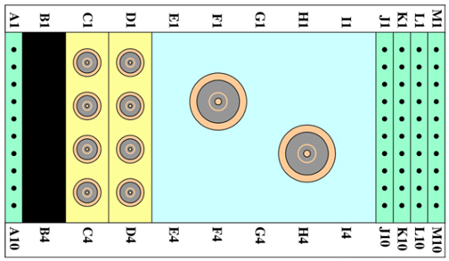

Operating Documentation
Direction 5440001-3, Rev# 6
Signa HDxt Service Methods
Module Version 7.0, Version Date 12/7/09
Operating Documentation |
| Required Persons | Procedure |
| 1 | 30 min. |
The following tips can be used to troubleshoot common problems with the 1.5T 8-Channel High Resolution Neurovascular Array Coil by Invivo, M3335M.
Digital Volt Meter
Problem:
Unable to Pre-Scan or Scanning and Unable to Receive a Signal.
Possible Solution:
Verify that the port which is used to plug in the coil either has a green light illuminated (Port A or Port B) or green lock (Port P1, P2, P3 or P4) indicated. This indicates the coil is properly plugged into the system.
Verify that the system has correctly detected the coil by checking the Currently Connected in the GUI as shown in the example in Illustration 1.
Illustration 1: Currently Connected Coils Window

Verify that the landmark is correct and the cradle has not unlatched.
Verify that the scan locations and any FOV offsets are correct.
Perform a Continuity Check on the external cable. The Continuity Check must be performed by a GE-authorized Service Engineer. (Refer to Section 4.4.)
Verify that the coil is positioned with the cable exiting toward the bore and the system and coil polarity match.
If unable to receive a signal, try to scan (transmit and receive) with the Body Coil. For this test, be sure to remove the Imaging Coil from the magnet bore before scanning with the body coil. If still unable to receive a signal, the problem may be with the MR system.
If the scan completes successfully, the problem may be with the Invivo Coil. Contact GE for further assistance. If unable to scan with the substitute coil, there may be a system problem related to this particular coil type.
Problem:
Poor IQ, Shaded Images or MCQA Fails.
Possible Solution:
Perform a Continuity Check on the external cable. The continuity check must be performed by a GE authorized Service Engineer. (Refer to Section 4.4.)
Verify that there are no loops in the cables.
Verify that there are no metal or ferromagnetic objects close to the coil, patient or magnet (i.e., safety pin, hair pin).
Verify that the coil is properly positioned.
Verify that the center frequency is within the frequency adjustment range for the system.
Verify that the R1, R2 and TG values from the pre-scan are within normally expected ranges.
If not already done, perform a system Quality Assurance phantom test. If the obtained values do not fall within normal operating parameters, investigate further by performing a phantom scan with the Body Coil. For this test, be sure to remove the Imaging Coil from the magnet bore before scanning with the body coil. If still experiencing the same problems, there may be an MR system problem.
If the body coil scan is satisfactory, acquire a scan using another coil of the exact same type (receive-only, phased array or transmit/receive - whichever applies) and the same system coil selection. If the image quality is visibly improved, there may be a problem with the Invivo Coil. Contact GE for further assistance. If the image quality still suffers, there may be a system problem related to imaging with this type of coil.
Problem:
Black Line or Signal Void on Image.
Possible Solution:
Verify that there is no metal present in the area being scanned in or on the patient.
Problem:
Some or All Images Appear Shaded or Exhibit Uneven Signal or Banding.
Possible Solution:
Confirm that no metallic objects are located nearby, outside the FOV. This is especially important on images utilizing Fat Saturation.
If Fat Saturation is being used, verify that the CFA fine adjustment has been optimized.
Problem:
System Does Not Recognize Coil or Reports MC Bias Errors with Coil Attached.
Possible Solution:
Perform the cable continuity check as follows:
| NOTE: | The center pins of the System Connector receive coaxial connectors are extremely fragile. Do not attempt to make any measurements at these center pins. |
With the coil cable disconnected, use a multimeter to ensure an open circuit condition exists between the designated pin and GND for each signal channel listed in Table 1.
If one or more of the readings indicate a short, replace the cable. If all of the readings indicate an open circuit condition, proceed to the next section.
Table 1: Signal Channel Expected Readings
| Signal Channel | SubD Coil Cable Connector | GND |
| MC-1 | A1 | 2, 5, 7, 10, 12, 14, 17, 22, 24 and shield of coaxial contacts. Refer to Illustration 2. |
| MC-2 | 1 | |
| MC-3 | 16 | |
| MC-4 | 6 | |
| MC-5 | 9 | |
| MC-6 | 23 | |
| MC-7 | 13 |
Illustration 2: Coil Cable Connector

With the coil cable disconnected, use a multimeter to determine continuity between the designated pins for each control channel listed in Table 2. Verify that the control pins are not shorted to GND.
If one or more of the readings are >3 ohms, replace the coil cable. If all readings are <3 ohms, proceed to the next section.
Table 2: External Cable Expected Readings B
| Control Channel | SubD Coil Cable Connector | System Connector |
| MC-1 Bias | 3 | F1 |
| MC-2 Bias | 4 | F2 |
| MC-3 Bias | 19 | F3 |
| MC-4 Bias | 20 | F4 |
| MC-5 Bias | 8 | F5 |
| MC-6 Bias | 21 | F6 |
| MC-7 Bias | 11 | F7 |
| MC-8 Bias | 25 | F8 |
| +10 V | 15 | I3 |
| GND | 2, 5, 7, 10, 12, 14, 17, 22, 24 and shield of coaxial contacts. Refer to Illustration 3. | G1, G8, I6, MC Shield |
Illustration 3: System Connector

With the coil cable connected to the coil, use a multimeter to measure the diode drop across the coil connector pins as detailed in Table 3. Refer to Illustration 3 for pin identification while performing this procedure.
If one or more of the readings indicate a short, replace the coil. If all of the readings are correct, perform Coil Imaging Performance Verification again. If the problem still exists, replace the 1.5T HD 8-Channel High Resolution Neurovascular Array Coil.
Table 3: Pin Diode Expected Readings
| System Connector | Reading | |||
| Positive Lead | Negative Lead | |||
| J1 | GND | [K1] | 1.7 | |
| GND | [K1] | J1 | Open | |
| J2 | GND | [K2] | 1.7 | |
| GND | [K2] | J2 | Open | |
| J3 | GND | [K3] | 1.7 | |
| GND | [K3] | J3 | Open | |
| J4 | GND | [K4] | 1.7 | |
| GND | [K4] | J4 | Open | |
| J5 | GND | [K5] | 1.7 | |
| GND | [K5] | J5 | Open | |
| J6 | GND | [K6] | 1.7 | |
| GND | [K6] | J6 | Open | |
| J7 | GND | [K7] | 1.7 | |
| GND | [K7] | J7 | Open | |
| J8 | GND | [K8] | 1.7 | |
| GND | [K8] | J8 | Open | |
Inspect the coil for visible signs of wear. If the coil housings will not seat with each other or if the latch mechanism does not work properly, refer to Field Replacement Units (FRU) list for appropriate replacement parts.